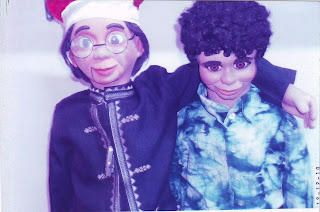

Can you help?
12/19/2010
From Mr. D: The following excerpts are from Roymar who is native to Sri Lanka. I met this gentleman at I-Fest in 2007, so I know his work and need is genuine. What he's asking will not be easy to grant, but if one of you feel compelled to further pursue the matter of such a possible donation*, please contact me: mahertalk@aol.com
* * * * *
From Roymar: I will introduce myself. I and my wife work amongst the poorest of the poor Children of Sri Lanka, .....for over 6 years we have entertained taught and assisted this lovely up & coming generation. My performances have been at no cost. As you know Sri Lanka has many such homes for such Children, mostly after the 2004 Tsunami, and of course the ethnic conflict which just ended after over 30 years, after taking away many a life. I lost a brother in the Tsunami, as he was a maintenance engineer in a coastal hotel which was washed away.
I have two figures Daniel & the other David. Both these super figures were gifted to me, and these two "sons" have done an yeomen service glorifying HIS name. I am also a Bible Illusionist and Puppeteer. Ventriloquism is something very rare in Sri Lanka, and I am the only one who does it in our own language, "Sinhalese". This I find is an excellent tool to Praise HIM more & more as Children seem to remember what they (figures) say. Last Sunday we spoke to 500 at one service.
Now we are in dire need of a Girl Figure as my wife is gearing herself to participate with me in Vent performances so we will have a 4 voice show. As such I am seeking your kind assistance to help me obtain one, even used it will be good enough for us. Could you please seek the possibility? You could be sure this will be help our Ministry.
Roymar Christian Performing Arts ("Roymar" is Royston & Marina, my wife's name.)
* * * * *
From Roymar: I will introduce myself. I and my wife work amongst the poorest of the poor Children of Sri Lanka, .....for over 6 years we have entertained taught and assisted this lovely up & coming generation. My performances have been at no cost. As you know Sri Lanka has many such homes for such Children, mostly after the 2004 Tsunami, and of course the ethnic conflict which just ended after over 30 years, after taking away many a life. I lost a brother in the Tsunami, as he was a maintenance engineer in a coastal hotel which was washed away.
{kind=link}

I have two figures Daniel & the other David. Both these super figures were gifted to me, and these two "sons" have done an yeomen service glorifying HIS name. I am also a Bible Illusionist and Puppeteer. Ventriloquism is something very rare in Sri Lanka, and I am the only one who does it in our own language, "Sinhalese". This I find is an excellent tool to Praise HIM more & more as Children seem to remember what they (figures) say. Last Sunday we spoke to 500 at one service.
Now we are in dire need of a Girl Figure as my wife is gearing herself to participate with me in Vent performances so we will have a 4 voice show. As such I am seeking your kind assistance to help me obtain one, even used it will be good enough for us. Could you please seek the possibility? You could be sure this will be help our Ministry.
Roymar Christian Performing Arts ("Roymar" is Royston & Marina, my wife's name.)
* * * * *
*Note from Mr. D: I made the figure shown on the right in the photo, and I believe Tim Cowles the figure on the left. A female doll may be hard to find, but if someone has a Charlie doll or Danny doll to donate, I have a wig and clothes - I would donate my shop time for conversion to a female character.